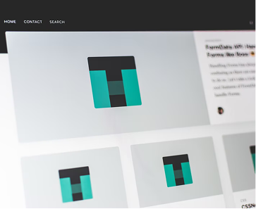

DEVELOPER
Erica Font
Amet minim mollit non deserunt ullamco est sit aliqua dolor do amet sint. Velit officia consequat duis enim velit mollit. Exercitation veniam consequat sunt.
About me
The long barrow was built on land previously inhabited in the Mesolithic period. It consisted of a sub-rectangular earthen tumulus, estimated to have been 15 metres (50 feet) in length, with a chamber built from sarsen megaliths on its eastern end. Both inhumed and cremated human remains were placed within this chamber during the Neolithic period, representing at least nine or ten individuals.
Projects

TITLE PROJECT
Amet minim mollit non deserunt ullamco est sit aliqua dolor do amet sint. Velit officia consequat duis enim velit mollit. Exercitation veniam consequat sunt nostrud amet.